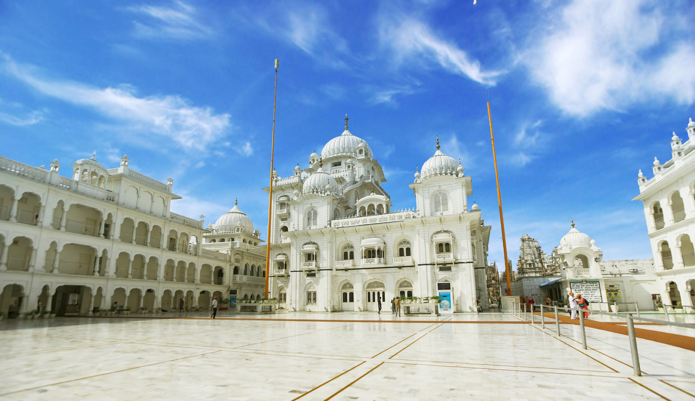
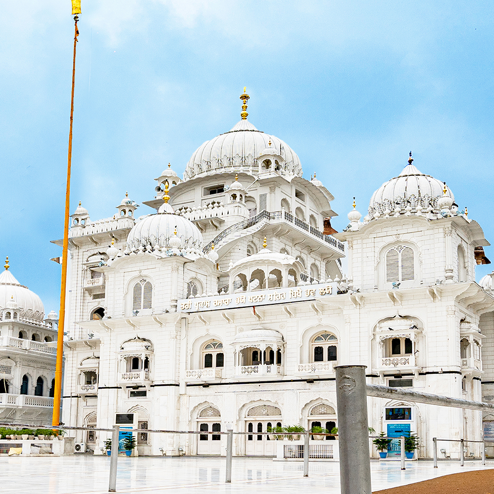
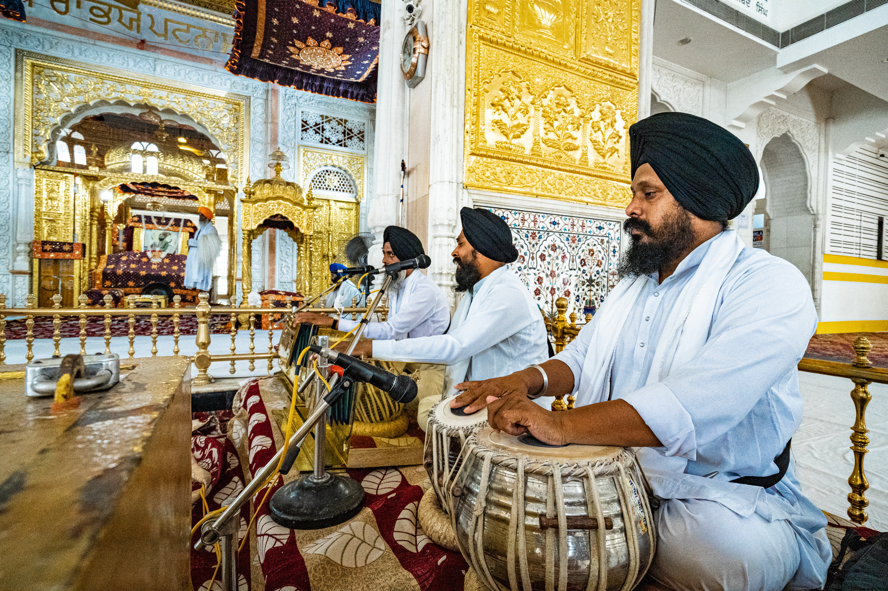

Sacred Sikh Destinations
Pilgrimage sites in Bihar, including Patna Sahib, the birthplace of Guru Gobind Singh.

Takhat Sri Harmandir Ji
Patna Sahib, one of the five Takhts, marking the birthplace of Guru Gobind Singh.

Gurdwara Handi Sahib
A Patna shrine associated with Guru Gobind Singh's childhood.

Gurdwara Guru Ka Bagh
Another Patna stop on the Sikh Circuit around the Harmandir Sahib precinct.

Prakash Punj
A memorial marking the prakash of Guru Gobind Singh in Patna.

Kangan Ghat
A Ganga-side site in Patna on the Sikh pilgrimage trail.
Takhat Sri Harmandir Ji
One of the five Takhts of Sikhism, marking the birthplace of Guru Gobind Singh.
🙏
Gurdwara Handi Sahib
A historic shrine in Patna associated with Guru Gobind Singh's childhood.
🌊
Gurdwara Gobind Ghat
A riverfront gurdwara on the Ganga, part of the Patna Sahib pilgrimage trail.